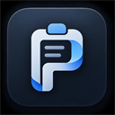

General Settings
Configure clipboard capture rules, capacity, and default behaviors.
Privacy & Security Guard
Pastiq is designed with zero-knowledge, zero-telemetry local security.
Add sensitive domains (e.g. banking, password managers). Pastiq completely ignores copy events on these websites.
Erase Local Data
Permanently delete stored clipboard items from your local browser IndexedDB.
Snippets & Text Expansion
Expand quick shortcuts (e.g. ;email) into full text anywhere on the web.
| Snippet Name | Shortcut | Content Preview | Usage | Actions |
|---|
Difficult Pages & Clean Extraction
Extract visible text legitimately from pages with disabled selection or cluttered markup.
Legal & Security Standard Compliance
Pastiq only extracts content that is already visibly rendered and accessible to the user on the screen. It never circumvents authentication, paywalls, DRM, or browser origin sandboxing.
Keyboard-First Productivity
Operate your clipboard at the speed of thought without touching the mouse.
Quick In-Page Palette
Summons the floating command palette over any active webpage for instant search & paste.
Navigate History
Scroll up and down through matching clipboard items and snippets instantly.
Paste / Copy Item
Copies the highlighted item or pastes it directly into your active input field.
Delete Item
Instantly removes the highlighted item from your local history.
Dismiss Palette
Immediately closes the popup or in-page palette and restores input focus.
Inline Expansion
Type any registered snippet shortcut (e.g. ;email) to expand in real time.
Want to change browser-level activation keys? Visit Chrome Shortcut Manager.
Cross-Device Sync
Encrypted multi-device synchronization is currently in development for V2.
Zero-Knowledge Encrypted Sync
We are engineering an end-to-end encrypted protocol ensuring that your clipboard items, snippets, and folders sync seamlessly across Chrome on macOS, Windows, and Linux. Your encryption keys will stay strictly on your local devices.
AES-256-GCM encryption with client-side keys. No third party can read your data.
Copy on your desktop, paste on your laptop within 100 milliseconds.
Configure which categories, folders, and snippets sync across specific devices.
About Pastiq
A memory layer for everything you copy in Chrome.

Pastiq V1.0.0
Production-grade local-first Clipboard & Snippet Manager
Privacy Guarantee
Your clipboard data is stored strictly in your browser's private IndexedDB database on your physical machine. Pastiq contains zero tracking scripts, zero third-party telemetry, and zero network calls for clipboard operations. Your personal snippets, URLs, and copied text never leave your machine.
Chrome Manifest V3
IndexedDB (Isolated local database)
Targeted Event Engine (Zero Polling)
Offline-First (V2 Encrypted Sync Ready)